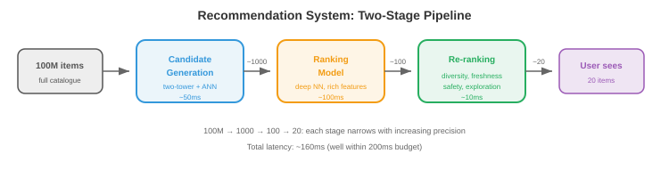

ML 设计案例¶
一句话总结：通过七个完整案例 (推荐、搜索、广告点击、欺诈、内容审核、对话式 AI、图像检索) 走一遍 ML 系统设计的通用套路：问题定义 → 数据 → 特征 → 模型 → 服务 → 评估 → 迭代。
学 ML 系统设计最好的方式是过实际案例。本文件走完七个完整设计：推荐系统、搜索排序、广告点击预测、欺诈检测、内容审核、对话式 AI，以及大规模图像检索。
- 每个案例都遵循同一套框架：
- 问题定义：我们在做什么？用户是谁？约束是什么？
- 数据：我们有什么数据？怎么采集？怎么打标？
- 特征：模型需要什么特征？
- 模型：什么架构和训练方式？
- 服务：怎么部署、怎么上线？
- 评估：怎么衡量成功？
- 迭代：长期能做哪些改进？
1. 推荐系统 (例如 YouTube、Netflix、Spotify)¶
问题定义¶
- 目标：给用户推他们会喜欢的内容，最大化参与度 (观看时长、播放数、点击数)。
- 规模: 10 亿以上用户，1 亿以上物品，每秒 1 万以上推荐请求。
- 延迟：整条推荐流水线要在 200 ms 内完成。
- 关键难点：候选集巨大 (1 亿物品)，不可能在实时里为所有用户对所有物品打分。
架构：两阶段流水线¶

候选生成¶
- 目标：把 1 亿物品压到约 1000 个候选。必须快 (<50 ms)。
- 双塔模型 (two-tower)：把用户和物品都编码到同一个嵌入空间。用户嵌入捕捉偏好，物品嵌入捕捉内容特性。评分 = 用户嵌入与物品嵌入的点积。
- 训练：在 (user, positive_item, negative_items) 三元组上做对比学习。正样本 = 用户互动过的物品；负样本 = 随机物品 + 困难负例 (用户没互动的热门物品)。
- 服务：预先计算所有物品的嵌入。请求到来时：计算用户嵌入，再用近似最近邻 (Approximate Nearest Neighbor, ANN) 搜索 (向量数据库里的 HNSW) 找出最近的 1000 个物品嵌入。
排序¶
- 目标：对这 1000 个候选精细打分。可以花约 100 ms。
- 模型：一个吃丰富特征的深度神经网络 (多层感知机 (Multi-Layer Perceptron, MLP) 或 Transformer)：用户特征 (画像、历史、上下文)、物品特征 (内容、热度、新鲜度)、交叉特征 (用户-物品交互历史、上下文相关性)。
- 输出：参与度的预测概率 (点击、观看 50% 以上、点赞、分享)。多目标可以合成：\(\text{score} = w_1 \cdot P(\text{click}) + w_2 \cdot P(\text{watch}) + w_3 \cdot P(\text{like})\)。
重排¶
- 施加业务规则：多样性 (别一次给同一个创作者的 5 个视频)、新鲜度 (给新内容加权)、安全性 (过滤被标记的内容)，以及个性化探索 (放几个排名偏低但用户可能会喜欢的东西)。
简单估算¶
-
物品嵌入索引: 1 亿物品 × 256 维 × float16 = 50 GB。HNSW 索引会再多约 2 倍开销 → 约 100 GB。单机 128 GB 内存放得下，或者分片到 4 台 32 GB 机器上。
-
用户嵌入计算：每个用户约 5 ms (在用户特征上跑一个小 MLP)。10K QPS 下需要约 50 个模型副本扛住流量。
-
ANN 搜索：用 HNSW 在 1 亿向量里取 top-1000 约 2 ms。10K QPS 下每个索引副本能扛约 500 QPS → 需要 20 个副本。
-
排序模型: 1000 个候选 × 每个约 0.1 ms = 每次请求 100 ms。10K QPS 需要每秒 1000 GPU 秒 → 光排序就要约 10 块 A10G GPU。
-
总基础设施：约 20 个嵌入索引副本 + 约 50 个用户嵌入服务器 + 约 10 块排序 GPU + 缓存 + 负载均衡。云上大约每月 5 万到 10 万美元。
冷启动¶
-
新用户 (没有历史)：用画像特征、设备/位置上下文，配合基于热度的推荐。互动 5-10 次之后再切到个性化模型。
-
新物品 (没有参与度数据)：用基于内容的特征 (标题、描述、缩略图嵌入)。分配一块探索预算：把新物品展示给一小部分用户，快速攒参与度数据。加权期过后仍无参与度的物品降权。
-
冷启动是一个系统问题：特征仓库必须优雅地处理特征缺失 (返回默认值，而不是报错)。模型训练时要模拟特征缺失 (训练期间对用户历史特征做 Dropout，等价于在训练里就见过新用户)。
评估¶
- 离线：归一化折损累计增益 (Normalized Discounted Cumulative Gain, NDCG)、recall@K、precision@K，在留出集上评估。
- 线上: A/B 测试衡量观看时长、DAU、留存。长周期 A/B (跑几周) 才能捕捉短测试看不到的留存效应。
2. 搜索排序 (例如 Google、Bing)¶
问题定义¶
- 目标：给定用户查询，从数十亿文档的语料里返回最相关的结果。
- 延迟：总共 <500 ms (检索 100 ms + 排序 200 ms + 渲染 100 ms + 其他开销)。
架构：查询理解 → 检索 → 排序¶
查询理解¶
-
检索前先处理原始查询，改善结果：
-
拼写纠错: "reccomendation systm" → "recommendation system." 用编辑距离模型，或者用搜索日志里 (拼错，纠正) 对训练一个序列到序列模型。
-
查询扩展：加相关词提高召回。"Python ML" → "Python machine learning scikit-learn pytorch." 用同义词词典、词嵌入，或让大语言模型 (Large Language Model, LLM) 生成扩展。
-
意图分类：判断用户想要什么。"buy Nike shoes" 属于交易型 (展示商品页)。"How does backpropagation work" 属于信息型 (展示文章)。"facebook.com" 属于导航型 (直接跳到站点)。不同意图应该触发不同的检索策略和结果版式。
-
实体识别：从查询里抽实体。"best restaurants near Times Square" → 位置："Times Square"，实体类型："restaurants." 路由到位置感知的搜索管线。
检索¶
-
BM25 (传统)：基于词项匹配的检索，用倒排索引。快，对关键词查询有效。没有语义理解 ("dog food" 匹配不到 "canine nutrition")。
-
稠密检索 (dense retrieval)：用双编码器 (bi-encoder，如 DPR 或 ColBERT) 把查询和文档都编码成嵌入。用 ANN 搜索检索。捕捉语义相似度 ("dog food" 能匹配到 "canine nutrition")。比 BM25 慢，但对自然语言查询更好。
-
混合检索 (hybrid retrieval): BM25 + 稠密检索合体。BM25 抓精确关键词匹配，稠密检索抓语义匹配。合并去重，两全其美。
排序¶
-
Learning to rank (学习排序)：一个模型对每个 (query, document) 对打分。三种思路：
- Pointwise：独立预测每个文档的相关度分数。简单但忽略了相对顺序。
- Pairwise：预测两个文档中哪个更相关。LambdaMART (梯度提升树) 是经典做法。
- Listwise：直接对整条排序列表优化列表级指标 (NDCG)。更复杂，但效果最好。
-
交叉编码器 (cross-encoder)：一个 Transformer 把
[query, document]一起吃进去输出相关度分数。比双编码器 (独立编码 query 和 document) 更准，因为能捕捉细粒度交互。但太慢，跑不动全语料——只用来重排检索出来的 top 100-1000 个候选。
特征¶
- 查询特征：查询长度、语言、意图分类 (导航型、信息型、交易型)。
- 文档特征: PageRank、新鲜度、内容质量分、域名权威度。
- 查询-文档特征: BM25 分、嵌入相似度、精确匹配数、历史日志里这个 (query, document) 对的点击率。
3. 广告点击预测¶
问题定义¶
- 目标：预测用户点广告的概率。这个概率决定了实时竞价里出多少钱。
- 规模：每秒 10 万以上次拍卖，每次要在 10 ms 内给出预测。
- 收入影响：点击预测准确率提升 0.1% 就等于额外几百万美元收入。
架构¶
-
特征工程是广告系统的核心。特征包括：
- 用户特征：画像、浏览历史、购买历史、设备、位置、时段。
- 广告特征：素材 (图/文)、广告主、类目、历史点击率 (Click-Through Rate, CTR)、出价金额。
- 上下文特征：页面内容、广告位置、设备类型、连接速度。
- 交叉特征: user_category × ad_category 的交叉、user_region × ad_campaign 的交叉。
-
模型：历史上是逻辑回归 (简单、快、可解释)。现代系统用深度学习：一个 DLRM (Deep Learning Recommendation Model，深度学习推荐模型)，为类别特征配嵌入表，稠密特征走 MLP。
-
校准 (calibration)：预测概率必须准 (模型说 P(click) = 0.05，就应该有 5% 的曝光真的被点)。校准至关重要，因为预测概率直接决定出价。
-
探索-利用：一直展示预测最好的广告长期不划算 (永远发现不了某个新广告可能更好)。汤普森采样或 \(\epsilon\)-greedy 探索保证一小部分曝光留给不确定的广告，用来收集数据。
实时竞价¶
- 用户加载页面时，一场广告拍卖要在 <100 ms 内跑完：
- 发布方把出价请求 (用户信息、页面上下文) 发给多个广告交易所。
- 每个广告主的竞价服务器为自己的广告预测 CTR。
- 出价 = CTR × value_per_click。出价高的赢拍卖。
- 中标广告展示；被点了广告主就付费。
4. 欺诈检测¶
问题定义¶
- 目标：实时检测欺诈交易 (信用卡欺诈、账号盗用、假评论)。
- 延迟: <100 ms (交易必须在支付完成前被批准或标记)。
- 关键难点：类别极度不平衡 (欺诈率 0.1%)。误报会挡住正常用户；漏报会赔钱。
架构¶

特征¶
- 交易特征：金额、币种、商户类目、时段、是否跨境。
- 用户特征：账户年龄、平均交易金额、近期交易次数、设备指纹。
- 速率特征 (velocity) (实时，从流式管线来)：最近 5 分钟交易数、最近 1 小时去重商户数、与上一笔交易的地理距离。
- 图特征：这个商户是否连着已知欺诈团伙？这台设备是否被已标记账号共用？
模型¶
-
梯度提升树 (XGBoost、LightGBM) 是表格型欺诈检测的标配。它处理混合特征类型很稳，可解释 (特征重要性)，训得快。
-
处理不平衡：多数类欠采样、少数类过采样 (SMOTE)，或者在损失函数里用类权重。Focal loss (第 8 章) 会压低简单负例的权重。
-
代价矩阵：一次误报 (挡住合法交易) 有代价 (用户不爽，丢单)。一次漏报 (放过欺诈) 有另一种代价 (钱丢了)。决策阈值应该最小化总期望代价，而不是最大化准确率。
Human-in-the-Loop (人工在环)¶
- 不确定的预测 (模型置信度在 0.3 到 0.7 之间) 送到人工复审。审核员的判决变成再训练的标签。这形成一个反馈闭环：模型见到越来越多打好标的欺诈案例，能力持续提升。
5. 内容审核¶
问题定义¶
- 目标：自动检测并从平台移除有害内容 (仇恨言论、暴力、错误信息、儿童性剥削材料 (Child Sexual Abuse Material, CSAM))。
- 规模：每天数十亿条帖子 (文本、图片、视频)。
- 难点：严重依赖语境 (讽刺、反讽、文化差异)。必须在言论自由与安全之间拿捏平衡。
架构¶
-
多模态分类：文本、图片、视频各一个模型，再来一层融合合并信号。
-
文本审核：微调过的语言模型把文本分类到不同类目 (骚扰、仇恨言论、错误信息、垃圾内容)。多语种模型覆盖 100+ 种语言。
-
图像审核：视觉模型检测：露骨内容 (裸露、暴力)、图片中的文字 (光学字符识别 (Optical Character Recognition, OCR) + 文本分类器)，以及已知有害内容 (与已知 CSAM 哈希库做哈希匹配)。
-
视频审核：按固定间隔采样帧，每帧跑图像分类器，再结合音频转写 (自动语音识别 (Automatic Speech Recognition, ASR) → 文本分类器)。
-
策略即代码 (policy-as-code)：审核策略以结构化规则定义，把模型输出映射到动作：
if text_model.hate_speech_score > 0.9:
action = "remove"
elif text_model.hate_speech_score > 0.7:
action = "human_review"
else:
action = "allow"
- 策略经常变 (新法规、演变中的社区共识)。把策略跟模型解耦，改策略不用重训模型。
主动式 vs 被动式审核¶
-
主动式 (发布前)：内容上线前先跑分类器。高置信度违规自动拦截。有害内容永远不曝光，但发布多了延迟，也有误报 (合法内容被挡) 的风险。
-
被动式 (发布后)：内容立即上线。用户可举报，举报触发分类器 + 人工复审。对发布方延迟更低，但有害内容在被发现前是可见的。
-
多数平台两者都用：主动式覆盖高危类目 (CSAM：零容忍，发布前就拦)，被动式覆盖有争议的类目 (错误信息：需要人工判断，收到举报后再审)。
哈希匹配¶
-
对于已知有害内容 (CSAM、恐怖主义宣传)，用感知哈希 (perceptual hashing)：计算图像/视频的哈希，对轻微修改 (裁剪、缩放、压缩) 依然稳健。跟已知有害内容库 (NCMEC 的哈希库、GIFCT 共享哈希库) 比对。命中 → 直接下架，不需要分类器。
-
PhotoDNA (微软) 是 CSAM 检测的标准感知哈希，在很多司法辖区是法定义务，不只是技术选择。
简单估算¶
-
规模: 10 亿帖子/天 = 约 1.2 万帖子/秒。每帖要跑：文本分类 (约 5 ms)、图像分类 (约 20 ms)、哈希匹配 (约 1 ms)。12K QPS 下需要约 60 个文本分类器、约 240 个图像分类器、约 12 个哈希匹配器 (再加冗余)。
-
人工复审：假设 2% 帖子被送去复审 = 每天 2000 万条。按每个审核员每天 100 条算，需要 20 万审核员 (这就是为什么自动化准确率重要：误报率每降 0.1%，每天就少 100 万条复审)。
-
延迟预算：主动审核必须在发布管线 (约 500 ms) 内跑完。文本 (5 ms) + 图像 (20 ms) + 哈希 (1 ms) + 开销 = 在预算内。视频是例外：10 分钟视频每秒采 1 帧也需要 600 次分类器调用 → 走异步处理。
升级流程¶
-
自动移除 → 申诉的人工复审 → 专家复审 (法律、文化专家) → 疑难交策略团队。每一级处理的量更少但更精细。
-
反馈到模型：人工复审的判决是再训练最优质的标签。模型和审核员意见不合的样本优先做主动学习——它们代表模型最搞不定的场景。
6. 对话式 AI (基于 RAG 的聊天机器人)¶
问题定义¶
- 目标：一个用公司文档回答产品问题的聊天机器人。
- 需求：准确 (不能幻觉)、能给出引用、能处理追问，并且不越出产品域。

架构：检索增强生成 (Retrieval-Augmented Generation, RAG)¶
组件¶
-
文档摄入 (ingestion)：把文档切块并嵌入。切块策略影响很大：
-
定长切块：每 N 个 token 切一块 (比如 500)，块间重叠 M 个 token (比如 50)。简单、块大小可预测，但可能切在句中或段中，丢上下文。
-
语义切块：按段落或章节边界切。每块是一段自洽的信息。大小可变 (有的 100 token，有的 800)，需要检索系统能吃变长。
-
递归切块：先尝试按段落切。段落太长就按句子切。句子太长就按定长切。在连贯性和大小一致性之间取得最佳平衡。
-
嵌入：用文本编码器 (例如 E5、BGE、Cohere embed) 给每块做嵌入，存到向量数据库。
-
-
检索：把用户查询嵌入，在向量数据库里找最相似的 \(k\) 个块 (典型 \(k = 5\)-\(10\))。可选：用交叉编码器再重排一遍拉高精度。
-
生成：用检索出的块作为上下文构造提示词：
System: You are a helpful assistant. Answer based ONLY on the provided context.
If the answer is not in the context, say "I don't know."
Context:
[chunk 1]
[chunk 2]
...
User: {question}
-
护栏 (guardrails)：防止 LLM 回答产品域外的问题、生成有害内容，或跟检索出的上下文矛盾。做法：输入过滤 (拒掉跑题查询)、输出过滤 (检查回复是否与检索内容一致)，以及"宪法式"提示词 (指示模型拒绝某些请求)。
-
对话记忆：保留最近 \(n\) 轮对话，塞进提示词里，让模型能理解追问 ("那价格呢？" → 需要上文说的是哪个产品)。
查询改写¶
-
用户经常问模糊的追问："那价格呢？" (什么的价格？) 查询改写 (query rewriting) 用对话历史生成一个独立完整的查询：
- 输入：对话历史 + "那价格呢？"
- 改写后："产品 X 企业版的价格是多少？"
-
拿改写后的查询去做嵌入并检索向量数据库。不改写的话，检索就只会搜 "价格"，返回一堆无关内容。
-
查询改写可以用一次小 LLM 调用 (约 50 ms)，或者用微调过的序列到序列模型 (约 5 ms)。
简单估算¶
- 文档语料: 1 万页，平均每页 2000 token = 2000 万 token。按 500 token/块 + 50 token 重叠 = 约 4.4 万块。
- 嵌入索引: 4.4 万块 × 768 维 × float16 = 约 65 MB。轻松装内存。就算 1000 万块也不过约 15 GB。
- 延迟拆解：查询嵌入 (5 ms) + 向量检索 (2 ms) + 交叉编码器重排 top-50 (20 ms) + LLM 生成 (500-2000 ms) = 总共约 600-2100 ms。LLM 占大头。用流式输出减少感知延迟。
- 成本：按 3 美元/百万 token (Claude / GPT-4 API) 算，每天 1000 次查询，每次约 2000 token = 约 6 美元/天。规模上到 100 万查询/天，就自建一个 7B 模型跑在 2 块 A10G GPU 上 (约 50 美元/天)，成本降 100 倍。
评估¶
- 检索质量: Recall@K (top-K 里是否包含答案)、MRR (Mean Reciprocal Rank，平均倒数排名)。
- 生成质量：事实准确性 (回复是否与检索内容一致)、有据性 (是否正确引用了对应块)、答案相关性。
- 端到端：用户满意度 (点赞/点踩)、升级到人工客服的比率。
7. 大规模图像检索¶
问题定义¶
- 目标：给定一张图，从 10 亿以上图片语料里找视觉相似的图。
- 应用：反向图像检索、商品搜索 (拍照 → 匹配商品)、去重。
- 延迟：含网络往返 <500 ms。
架构¶
嵌入抽取¶
-
模型：预训练视觉编码器 (视觉 Transformer (Vision Transformer, ViT)、CLIP 的图像编码器、DINOv2)。有需要就在特定领域 (时尚、电商、医学影像) 上微调。
-
训练：对比学习 (第 10 章)。正样本对 = 同一张图的不同视角 (或图-文对)。负样本对 = 随机图。模型学到相似图产生相似嵌入，不同图产生不同嵌入。
索引¶
-
离线：给全部 10 亿张图做嵌入并建 ANN 索引。用 HNSW (文件 03)，建索引要几个小时，索引存在内存里 (10 亿 × 512 维 × float16 + 图结构开销约 128 GB)。
-
分片 (sharding)：把索引切到多台机器上。每台放一个分片。查询时并行搜所有分片，合并 top-K。
-
增量更新：新图 (上传、新商品) 要加进索引。HNSW 支持增量插入，不用重建。向量数据库 (Milvus、Pinecone) 原生支持。
服务¶
-
嵌入服务：一台跑 ViT 的 GPU 服务器。每张图约 20 ms 延迟。批处理提高吞吐。
-
检索服务: ANN 索引服务器。用 HNSW，从 10 亿向量里取 top-100 约 10 ms。
-
缓存：缓存热门查询的结果。做去重时，把最近上传图片的嵌入缓存下来，新上传先比对缓存再去搜索全量索引。
评估¶
- Precision@K: top-K 里的结果真的相似吗？
- Recall@K：语料里所有真正相似的图，top-K 里覆盖了多少？
- Mean Average Precision (mAP，平均精度均值)：精确率-召回率曲线下面积。
- 人工评估：对主观相似度，让人评分判断检索到的图是否相关。
面试框架¶
-
遇到系统设计题，按下面这套框架走：
-
明确需求 (2-3 分钟)：问规模、延迟、一致性要求和边界情况。"用户量多少？可接受的延迟是多少？故障时怎么办？"
-
高层设计 (5-7 分钟)：画出主要组件与交互。从主路径 (happy path) 开始。用文件 01-03 里的那些模式。
-
深入某个模块 (15-20 分钟)：挑最有意思或最有挑战的组件详细展开。这里体现你的深度。对 ML 系统来说，深入的往往是：模型架构、特征管线，或者服务架构。
-
评估与监控 (3-5 分钟)：怎么衡量成功？可能会出什么问题？怎么发现和响应？
-
迭代 (2-3 分钟)：有更多时间/资源你会改进什么？体现你懂取舍、会排优先级。
-
面试官在看什么：结构化思考 (不上来就砸方案)、取舍意识 (每个选择都有代价)、实战知识 (你真的做过系统)，以及沟通能力 (能不能把设计说清楚)。
📌 本节要点¶
- 两阶段推荐流水线：快而粗的候选生成 + 慢而准的排序 + 业务重排，把 1 亿物品压到 20 条。
- 双塔 + ANN：用户塔和物品塔各自出嵌入，向量数据库做 ANN 检索，是候选生成的主流做法。
- 搜索三段式：查询理解 → 检索 (BM25 / 稠密 / 混合) → 排序 (Pointwise / Pairwise / Listwise + 交叉编码器重排)。
- 广告点击预测：特征工程是核心，模型必须校准 (预测概率直接决定出价)，用探索机制避免局部最优。
- 欺诈检测：类别极度不平衡 + 严延迟约束，梯度提升树 + 速率/图特征 + 人工在环反馈闭环。
- 内容审核：多模态分类 + 策略即代码 + 主动/被动结合，已知有害内容走感知哈希 (PhotoDNA)。
- RAG 聊天机器人：切块 (递归切块最平衡) + 向量检索 + 查询改写 + LLM 生成，护栏防止越域和幻觉。
- 图像检索: ViT/CLIP 编码 + HNSW 分片索引 + 嵌入缓存，秒级从 10 亿图里找相似。
- 面试框架：明确需求 → 高层设计 → 深入模块 → 评估监控 → 迭代改进，展示结构化思考与取舍意识。